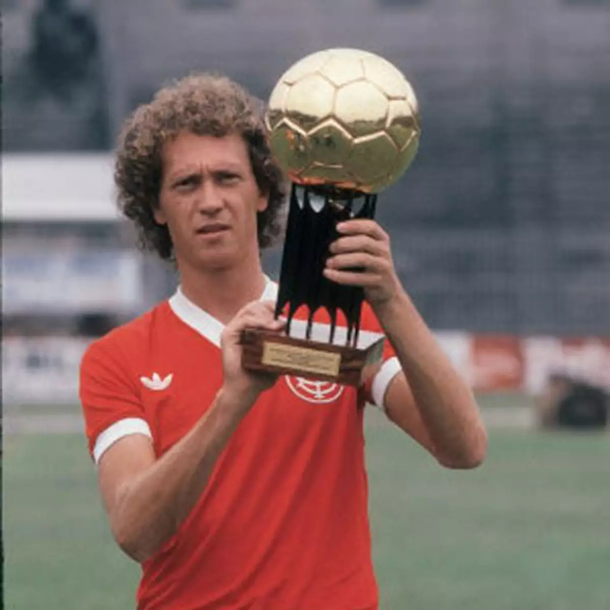
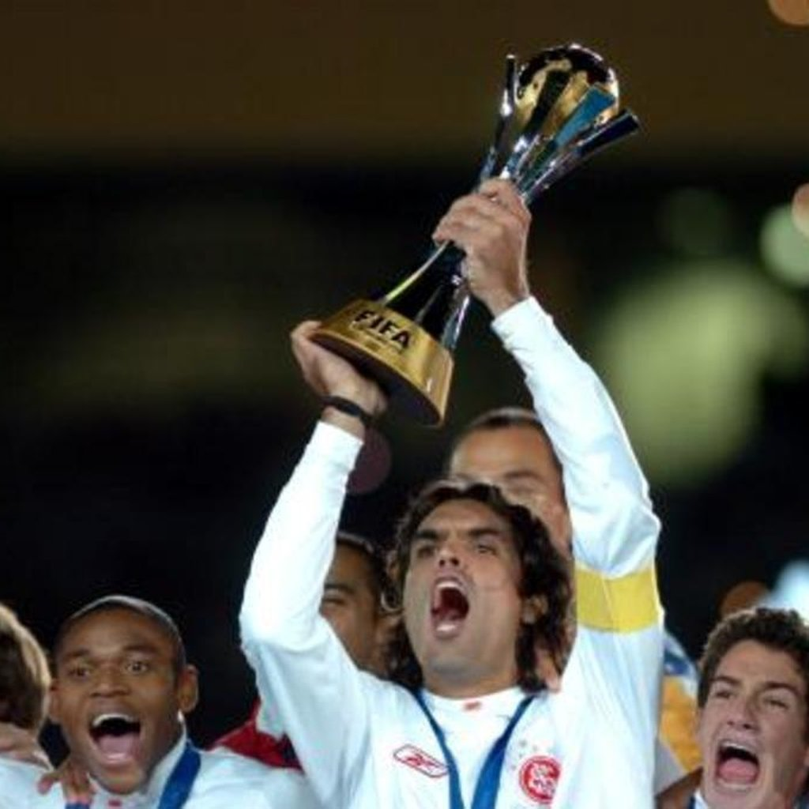

Ídolos do Internacional
O Sport Club Internacional é conhecido por ter tido muitos jogadores talentosos ao longo dos anos. Entre eles, três ídolos se destacam pela sua contribuição e legado no clube: Falcão, Fernandão e D'Alessandro.
Falcão
Paulo Roberto Falcão, também conhecido como o "Rei de Roma", é um dos maiores ídolos do Internacional. Falcão jogou no Inter de 1973 a 1980, onde conquistou diversos títulos, incluindo três Campeonatos Brasileiros.
Fernandão
Fernandão foi um dos maiores líderes da história do Internacional. Ele chegou ao clube em 2004 e rapidamente se tornou um ídolo. Fernandão foi capitão do time que conquistou a Copa Libertadores e o Mundial de Clubes da FIFA em 2006.
D'Alessandro

Andrés D'Alessandro, um dos maiores ídolos contemporâneos do Internacional, jogou no clube por mais de uma década. Sua habilidade, paixão e liderança em campo foram fundamentais para as conquistas da Copa Libertadores e da Copa Sul-Americana.